mcloud is a theme that makes the Spotify desktop app look like Apple Music on a Mac. Overnight, five changes were built and tested in the real Spotify app. Three need a design choice, and two are finished and only need an OK. For each item, pick an option and add a note if you want. Then press "Copy" at the bottom and send the text to Emir. Anything you leave unpicked stays as it is.
Türkçe: her maddede bir seçenek seç, istersen not yaz, en altta "Copy"ye bas ve metni Emir'e gönder. Seçmediğin hiçbir şey değişmez.
What it is. Right-click a song or card → Add to other playlist → hover a folder. The folder's submenu starts with "New playlist", even though you came here to pick an existing playlist. For an empty folder that row is all it shows.
What we found. The row comes from Spotify itself, not from the theme: plain Spotify without mcloud shows it too. Apple Music offers "New Playlist" only once, at the top of its "Add to Playlist" menu.
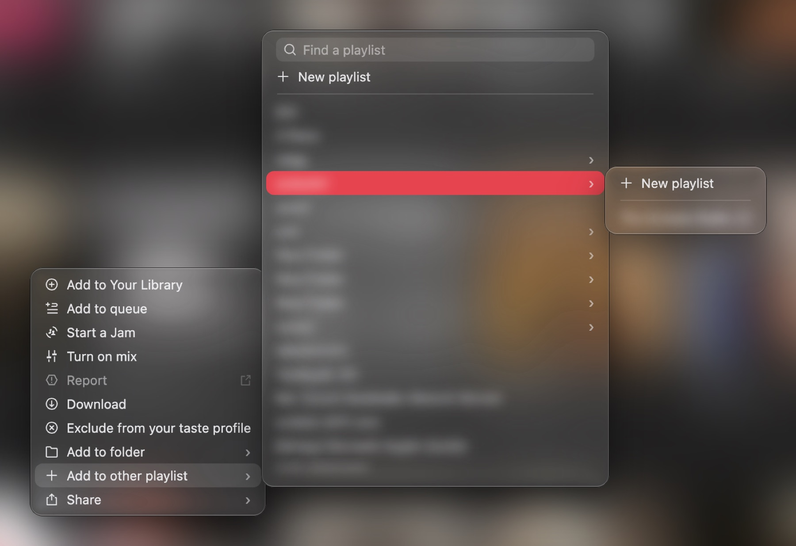
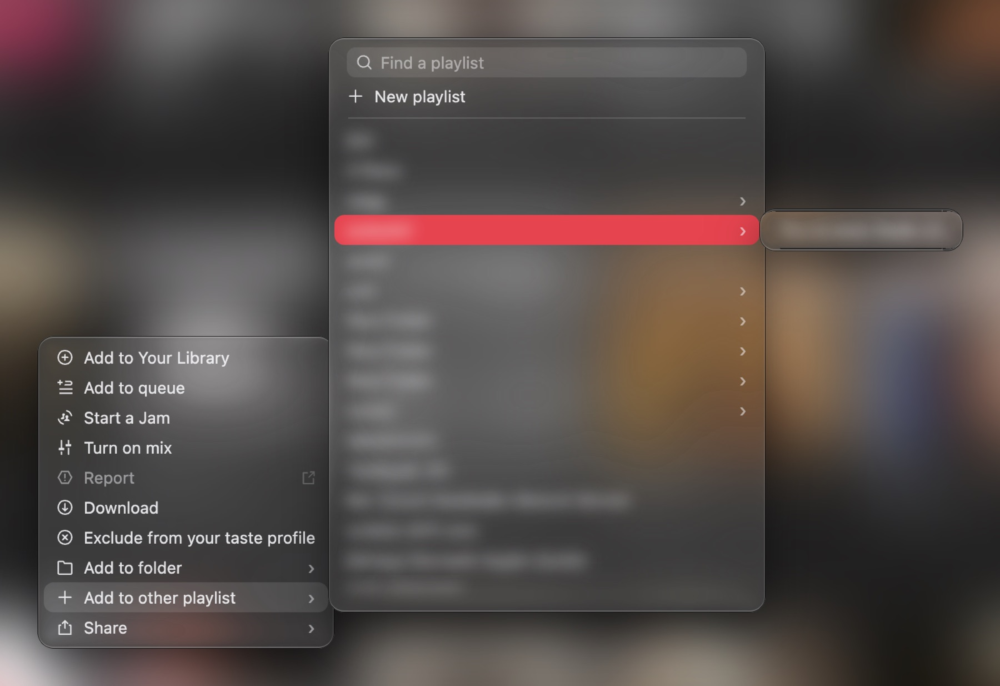
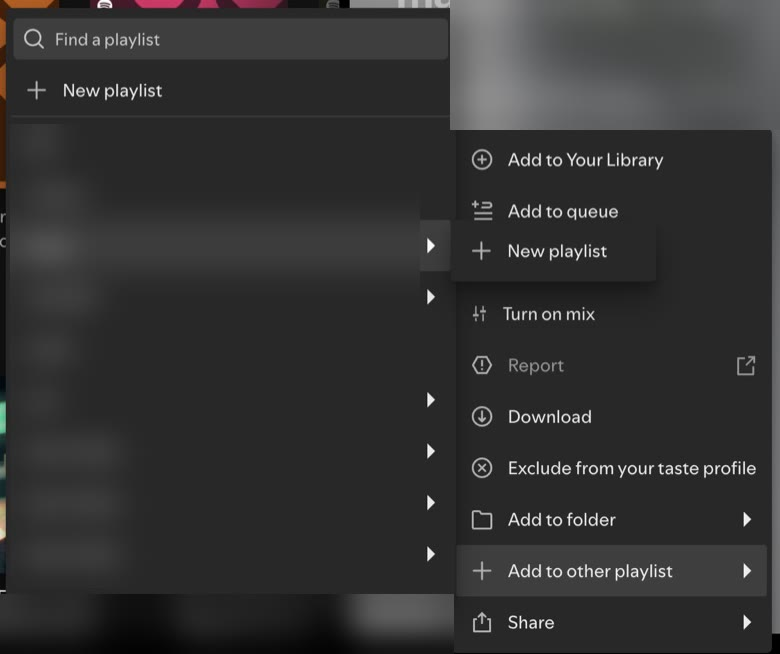
#202: "New playlist" inside folder submenus?
What it is. Spotify's Home sometimes shows a "New release from <artist>" card. mcloud still showed it in Spotify's own style: a grey box, a white play circle, a "+" and a black tooltip. The person who reported it asked for a rounded glass card like mcloud's other cards.
All three options use Apple's buttons: a red play button, Apple Music's star for "save", and share in a frosted circle. The black tooltip is now glass in every option (that part is #207 below).
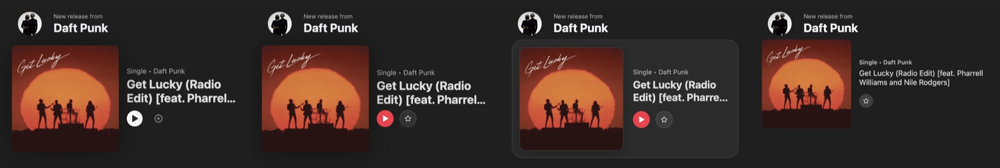
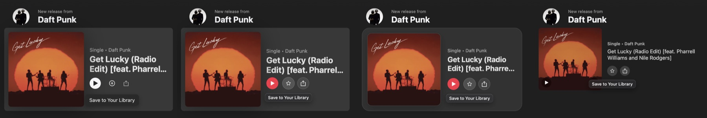
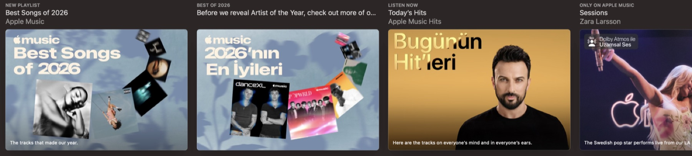
#199: which look for the "New release from" card?
What it is. On Windows, Spotify shows Windows' own minimise, maximise and close buttons. A user asked for the Mac's red, yellow and green buttons instead. This is now a theme setting: Settings → General → Window buttons, with Windows (as today), macOS, left or macOS, right. Red closes, yellow minimises and green maximises, and the symbols appear on hover. On a Mac nothing changes.
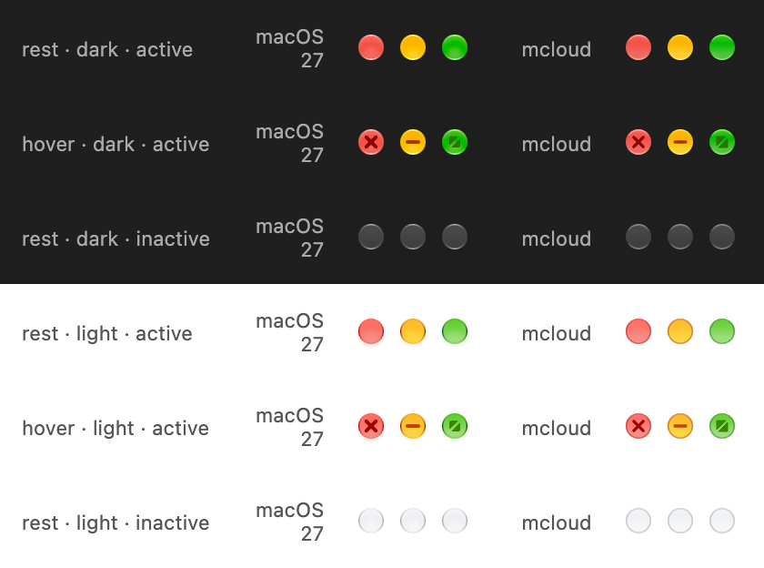
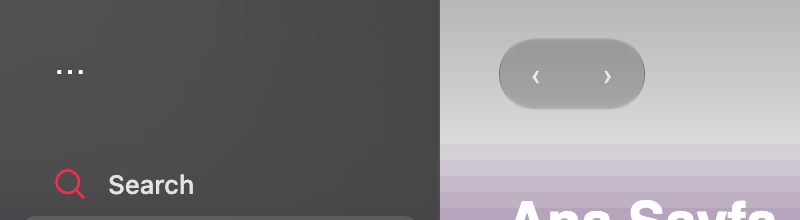
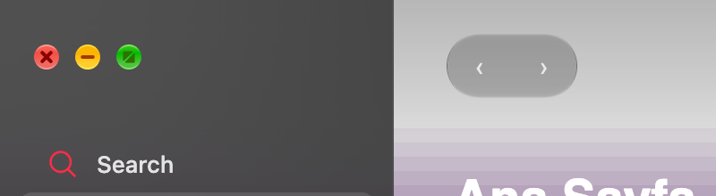
#200: how should the Mac window buttons behave?
Some of Spotify's newer tooltips (like the "Save to Your Library" one on the "New release from" card) were still solid black. They now get the same frosted glass as mcloud's other tooltips. There is nothing to choose here, only whether it looks right.
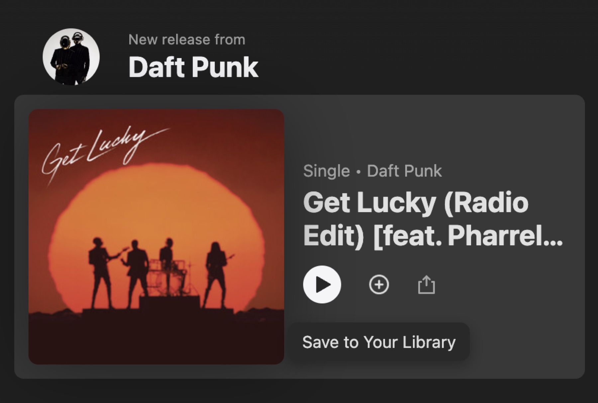
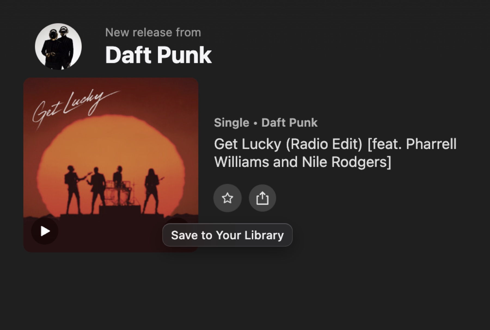
#207: OK to merge?
The right-hand "Now Playing" panel has a mode where it replaces the bottom player. Until now that mode always showed Spotify's plain lyrics. It now shows Spicy Lyrics (an add-on with animated lyrics) when it is installed, with the cover on top and the controls at the bottom.
There is also a new setting, Now Playing → Width: Narrow (280 px), Normal (today's width) and Wide (420 px). It replaces dragging the panel's edge, which was asked for but is costly to build and does not exist in Apple Music.
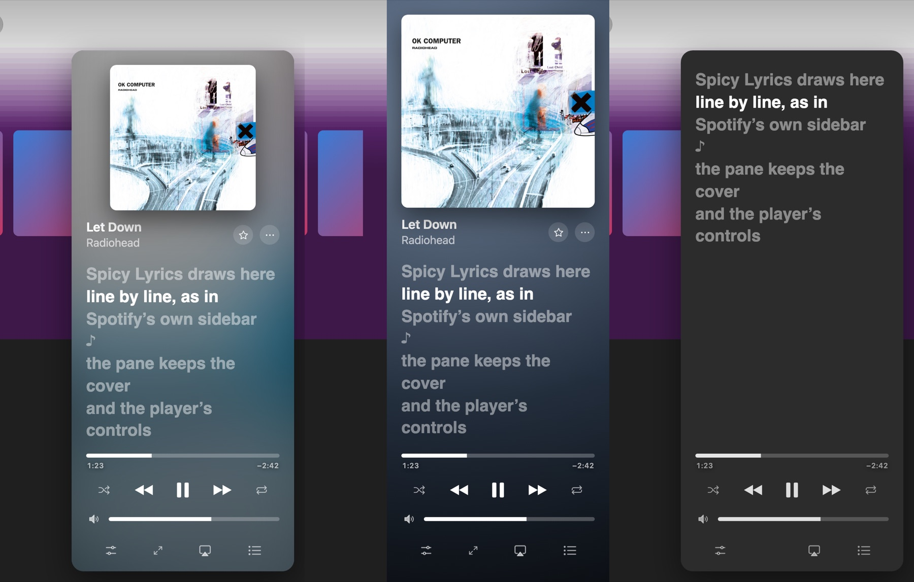
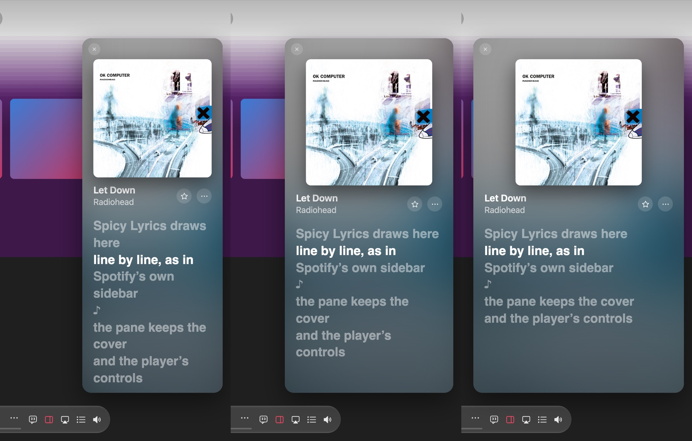
#209: OK to merge?
A few things have only been tested on a Mac: the glass effect at 125% and 150% display scaling, Spotify's menus, and the new window buttons from #200. If you can help, follow the Windows tester checklist and send the answers to Emir. Crop personal data out of the screenshots, as the checklist says.
A general note, if you have one.